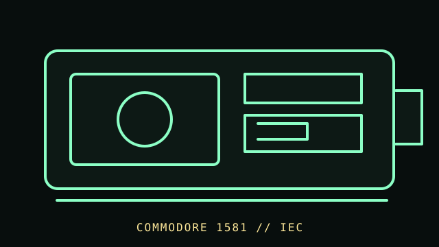

[ FLOPPY DRIVES // IDENTIFIED MODEL ]
Commodore 1581 Disk Drive
The Commodore 1581 is an external 3.5-inch disk drive for Commodore computers. It combines a 3.5-inch mechanism with Commodore-specific drive electronics and IEC serial host communication.

MODEL IDENTIFICATION: Commodore 1581; record label, board/ROM revision, serial number, and whether the enclosure or mechanism has been serviced. Confirm the full designation, revision, interface and service-document edition. This record is not a general compatibility guarantee.
Recorded specifications
| Catalog model | Commodore 1581 Disk Drive |
|---|---|
| Device type | External 3.5-inch drive with integrated controller |
| Interface / connector | Commodore IEC serial bus; not a standard PC floppy-controller attachment. |
| Media / formats | 3.5-inch magnetic disk in Commodore 1581 format. Disk structures and capacity depend on the 1581 DOS/software; this record does not treat the media as a PC FAT disk. |
| Revision caution | Verify model suffix, label, board/firmware revision, cable and manual edition. Model-family similarity is not proof of pinout, BIOS support, interchangeability or format compatibility. |
Host and controller compatibility
- Use with documented Commodore IEC systems and software that supports the 1581; the host’s commands/drive device number must match the installation.
- The 1581 uses a different media size and disk organization from common 1541/1571 media. Similar host connection does not make the disk formats interchangeable.
- Verify ROM, board revision, drive mechanics, and host software; a 3.5-inch shell alone does not establish PC compatibility.
Safe preservation and cleaning
Unplug the drive and bus before service. Keep contaminated or unstable disks out of the mechanism. Use the 1581 service documentation for head cleaning and alignment; avoid touching heads, using household cleaners, or opening disk jackets.
Photograph labels and connectors before service. Record the host, controller, settings, software, condition and source document. Keep original media or raw captures intact; verify checksums before making derivatives.
Manufacturer manuals & archival references
- Commodore 1581 User Guide / manual archiveArchived 1581 operating documentation; this scan is Spanish-language, so verify edition/model identity.
- Commodore 1581 model specifications — Internet ArchiveArchival technical summary; prefer the full manufacturer manual for exact revision-level claims.
- Commodore 1581 Disk Drive — Computerfacts archiveService-oriented secondary archive for troubleshooting and identification.
Archived manuals may apply to a particular revision or family. The complete model/revision-specific manufacturer manual takes precedence. Capacities and recording modes are omitted where they cannot be tied to the cited model and format.